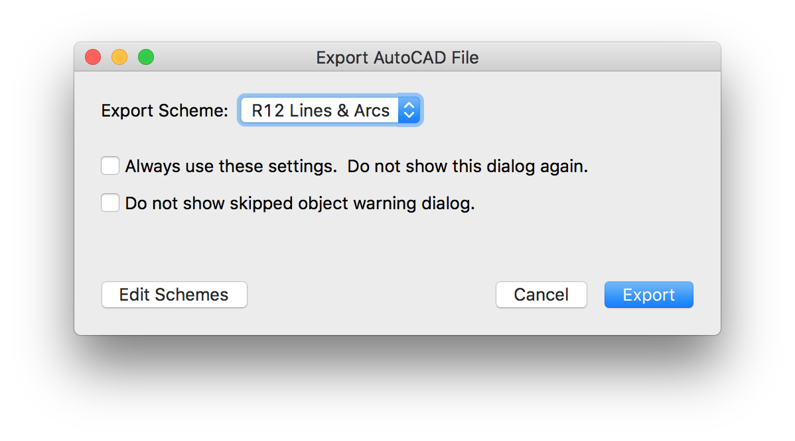

Table of Contents
Design
I made the original design of the desk back in 2014, when i thought i needed a standing desk to relieve my back (The table was never made in lack of a large enough CNC mill – until last week). The principles of the design were the following:
- Only wood, no screws or other fixture
- As little waste as possible (from a single 2.50m x 1.25m multiplex board)
- No other tools than a CNC mill
- Fully parametric
Design Improvements
Some adjustments to the design had to be made:
- Add dogbones to make it machinable on the cnc router
- Add fillets to concave corners to make them machinable
- Round convex corners in order not to kill ourselves
- Add an extra joint to test how tight everything will fit
- Add a supportive strut right below the tabletop
Dog vs. Mouse
Back when i created it, i wasn’t aware that the original design – without accounting for the tool diameter – would be useless for a CNC router. So one thing i had to change was to add that little dogbone fillets. Of course, they too are parametric and their radius is calculated as in order to leave just a little tolerance so the CAM processor doesn’t ignore those areas as too small for the tool.
The position of the circle relative to the rectangle whose corners it’s trying to ensure is actually quite easy to calculate. First, i did it wrong and placed the center of the circle right on top of the corner, which gives you rather a Mickey Mouse than a Dog Bone.
The correct center of the circle is on a 45° diagonal, offset by the radius from the corner towards the center of the rectangle. This way, the circle goes right through the corner, ensuring that just enough material is removed. Thanks to Ferdy for helping me figure this out!
Production
Outline
When the design is ready, the process continues as follows:
- Measure stock thickness (12.15mm)
- Enter the correct tool diameter (4mm)
- Recalculate the model based on the obtained values
- Mill a test joint from the same panel that’s gonna be used for the actual table
- Adjust clearance or stock thickness if joint doesn’t fit as desired
- Mill the table (first inside cuts, then outside)
- Clean the cutting edges (sand paper)
- Assemble everything
- Oil?
Model Parameters
The model has to be adjusted by setting some variables inside the OpenSCAD file.
- Take the diameter of the end mill from its data sheet
- Measure the width and length of the stock. Subtract about 10mm on each side as a safety margin, depending on how exact you can place it on the milling table
- Measure the exact thickness of the stock. Use a caliper to take multiple measurements on each side. Average them.
TOOL_DIAMETER = 4; // in mm
STOCK_WIDTH = 1210; // in mm
STOCK_LENGTH = 2480; // in mm
STOCK_THICKNESS = 12.15; // in mm
$fn = 50; // Number of circle segments. Set this to ≥50 for production (≤30 for development)
Final Checks
1. Assembled
Make a visual check of the assembled model to see if everything is there and in the right place. Also check if all holes for the joints are present. Set FLAT = false; and refresh the OpenSCAD Preview, then pan/rotate around with the mouse to inspect everything.
2. Flat
Switch the model back to flat:
FLAT = true;
PROJECTION = false;
Again, refresh the preview. Check if everything fits inside the gray box, which represents your stock panel minus the safety margins (values entered for STOCK_WIDTH and STOCK_LENGTH).
Render & Export
When all checks have passed, we switch both FLAT and PROJECTION variables to true. This time, we use the Render function (F6) instead of Preview. This process will take a couple of minutes, mainly depending on the tasked machine’s performance and the chosen value for $fn.
At the end of the process, we get our exact 2D outlines which we’ll export to DXF format.
CAM Preprocessing
Now these DXF outlines need to be prepared for the CAM step which will take place directly on the PC that controls the milling machine.
Our task is to group together all paths that need to be processed using the same strategy. The CAM-software we’re using requires them to have different colors. We take Rhino for this purpose.
1. Import DXF into Rhino
2. Select everything (CMD+A) and join all segments in order to close paths
3. Create four different layers and move the respective elements there. Assign each layer a distinct color.
- Inside cut: Joint test
- Outside cut: Joint test
- Inside cut: Main
- Outside cut: Main
4. Export to DXF with the R12 Lines & Arcs scheme

Machine Setup
Our data is now ready to be fed to the machine. This video documents the machine setup with Karsten from the FabLab Kamp Lintfort:
Test Joint
When the machine is set up, we mill a test joint in order check and adjust for the material properties.
The joint looks great, it just fits a tiny bit too tightly. But the error is so small, we’re gonna leave if for now. Later I find out that i have to sand each joint in order to make them slip a bit easier.
Let the mills grind
Now that the joint looks good, we can run the two remaining jobs for the actual Outside and Inside Cuts. Instead of showing you another boring video, you’ll just get a snapshot of the result. Search youtube for “cnc milling wood” if you want to watch machines at work.
Finishing
After the cutting we notice that our parts have fringed edges. This is especially obvious for cuts perpendicular to the grain of the top wood layer. Cuts that went parallel to the grain look quite smooth:
We use sand paper to clean all edges on all our parts: